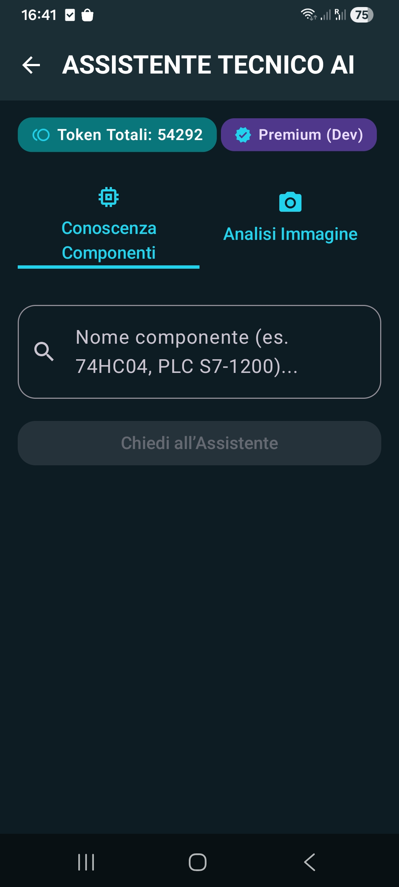

Tutto in uno: strumenti per ingegneria, calcoli tecnici, conversioni e toolkit professionale.
Scarica su Google PlayInstruments è il toolkit definitivo progettato per ingegneri, tecnici e hobbisti...

Il tuo consulente personale per la diagnostica e la risoluzione dei problemi in tempo reale.
Instruments integra un avanzato assistente basato su intelligenza artificiale, progettato per affiancare sul campo tecnici ed ingegneri. Con due modalità operative dedicate, offre un supporto immediato e mirato per ogni esigenza:
Ottieni risposte rapide a quesiti tecnici, formule, normative o dati di targa dei componenti in modo immediato.
Una guida passo-passo per la diagnostica dei guasti, l'analisi delle anomalie e la risoluzione di problemi complessi sui sistemi industriali.
Calcolo delle linee elettriche, dimensionamento cavi e caduta di tensione.
Convertitore di segnali 4-20mA con visualizzazione della scala.
Dimensionamento tubazioni e calcoli idraulici per fluidi.
Identifica il valore delle resistenze a 4 o 5 bande in un istante.
Potenza, Pressione, Temperatura, Valuta in tempo reale.
Scarica Instruments oggi stesso!